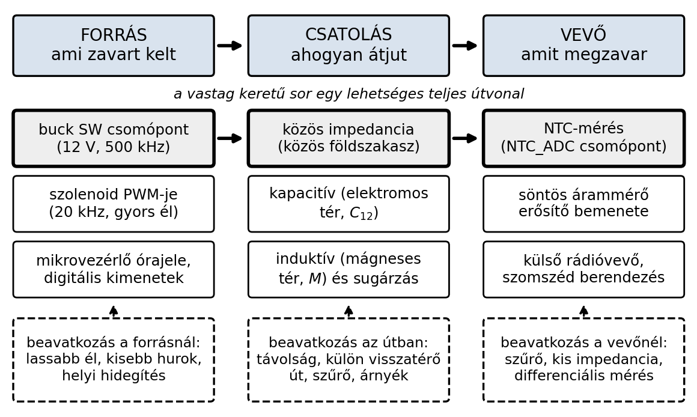
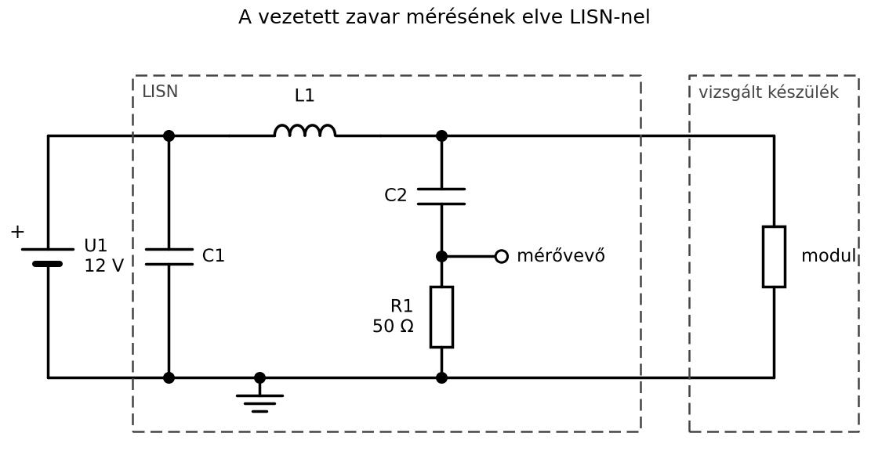
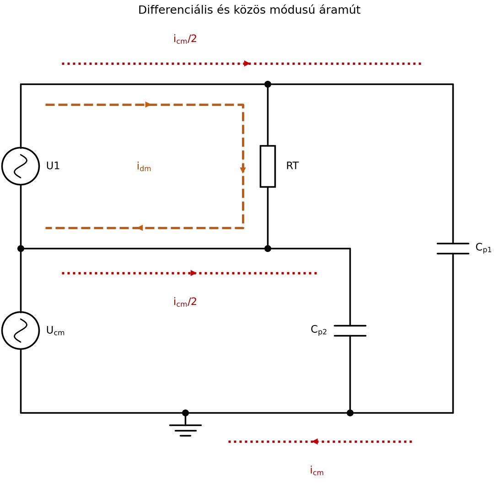

Ennek az alfejezetnek a végére:
Előfeltétel a Decibel, átviteli függvény és Bode-diagram, az Elsőrendű szűrők, sávszélesség és felfutási idő és a Hatásfok, veszteségek, alkatrészválasztás és kapcsolóüzemű zaj anyaga.
A szenzormodul asztalon, szakaszonként tesztelve működik. Összeépítve viszont, amikor a szolenoidot 20 kHz-es PWM-mel (impulzusszélesség-moduláció) hajtjuk, a hőmérséklet-kijelzés néhány egységet ugrál, és a mellette álló rádió serceg. Egyik jelenség sem „hibás alkatrész”: minden elem a saját adatlapja szerint dolgozik, csak éppen hat egymásra, olyan utakon, amelyek a kapcsolási rajzon nem látszanak.
Az ilyen hibát találgatással (még egy kondenzátor ide, még egy ferrit oda) lassan és drágán lehet javítani. Kell egy gondolkodási keret, amely megmondja, mit kérdezzünk. Ezt adja az elektromágneses összeférhetőség, és erre épül a fejezet többi alfejezete.
Minden zavarproblémának három szereplője van:

Hasonlat: a szomszéd hangos zenéje a forrás, a vékony fal a csatolás, a könnyen ébredő alvó a vevő. Segíthet a hangerő lehalkítása, a fal szigetelése vagy a füldugó. A hasonlat korlátja: egy áramkörben ugyanaz a rész egyszerre lehet forrás és vevő, és rendszerint több csatolási út működik párhuzamosan, ezért az egyik lezárása után a másik válhat láthatóvá.
Ha bármelyik szereplő hiányzik, nincs zavar. A beavatkozás ára viszont nagyon eltérő:
| Hol? | Jellemző eszköz | Előny | Hátrány |
|---|---|---|---|
| forrásnál | lassabb él, kisebb áramhurok, helyi hidegítés | minden vevőnek egyszerre segít | kapcsoló áramkörnél veszteséget növelhet |
| az útban | távolság, külön visszatérő út, szűrő, árnyék | célzott | utanként külön kell |
| a vevőnél | szűrő, kis impedancia, differenciális mérés, szoftveres átlagolás | utólag is gyakran megoldható | a többi vevőt nem védi, a kibocsátást nem csökkenti |
Ökölszabály (nem törvény): a rajztervezéskor a forrásnál a legolcsóbb beavatkozni, mert egy gate-ellenállás vagy egy jó helyre tett kondenzátor fillérekbe kerül, míg a kész termék utólagos árnyékolása drága.
Definíció. Az elektromágneses összeférhetőség (EMC, electromagnetic compatibility) a berendezés azon képessége, hogy a környezetében rendeltetésszerűen működik, és nem kelt másokat tűrhetetlenül zavaró jeleket. Az EMI (electromagnetic interference) maga a zavar, az EMS (electromagnetic susceptibility) a zavarérzékenység.
Két követelménycsoport következik ebből:
| Vizsgálati jelenség | Mit utánoz | Szabvány (szerkezet; szintek ellenőrizendők) |
|---|---|---|
| ESD (elektrosztatikus kisülés) | feltöltött ember vagy tárgy érintése | IEC 61000-4-2 |
| sugárzott rádiófrekvenciás tér | adók, mobiltelefon a közelben | IEC 61000-4-3 |
| gyors tranziens (burst) | induktív terhelés kapcsolásakor keletkező impulzuscsomag | IEC 61000-4-4 |
| túlfeszültség (surge) | villám közvetett hatása, nagy energiájú kapcsolás | IEC 61000-4-5 |
| vezetett rádiófrekvencia | kábelekre csatolt nagyfrekvenciás jel | IEC 61000-4-6 |
| kibocsátás (multimédia-berendezés) | a termék saját zavarkeltése | CISPR 32 |
Az IEC 61000-4-x lapok alapszabványok: a vizsgálat módját írják le. Hogy egy termékre melyik vizsgálat, milyen szinten és milyen elfogadási feltétellel vonatkozik, azt a termék- vagy általános szabvány mondja meg; a hatályos kiadás a mérvadó [S-IEC61000] [S-CISPR32]. A jogi keretet a Megfelelőség: CE, irányelvek, RoHS és a termékbiztonság logikája tárgyalta.
A kibocsátás mérése határértékgörbével történik: a frekvencia függvényében megadott legnagyobb megengedett szint, vezetett zavarnál jellemzően dBµV-ban (1 µV effektív értékhez viszonyítva), sugárzottnál térerősségként, dBµV/m-ben. A vezetett mérésnél a tápvezetékbe hálózati impedancia-stabilizátort (LISN, line impedance stabilization network) iktatnak. Ez három dolgot tesz: a tápforrás felől érkező zajt elválasztja, a vizsgált készüléknek meghatározott impedanciát mutat (így a mérés megismételhető), és a nagyfrekvenciás összetevőt a mérővevő 50 Ω-os bemenetére vezeti.

Ha a forrás egy frekvencián amplitúdójú, és a csatolási út a vevőre arányban viszi át, akkor decibelben a szorzás összeadássá válik:
Itt a forrás, a vevőnél megjelenő szint dBµV-ban. A tartalék a megengedett szint és különbsége. A képlet lineáris csatolásra és frekvenciánként érvényes. Gyakorlati üzenete: a forrásnál, az útban és a vevőnél elért javítások decibelben összeadódnak; három 10 dB-es lépés együtt 30 dB, vagyis körülbelül 32-szeres csökkenés.
Egy jel- vagy tápkábelben két vezető fut egymás mellett. Legyen és a két vezető árama azonos referenciairányban (mindkettő a forrástól a terhelés felé).
Definíció. A differenciális módusú (differential mode) áram az a rész, amely az egyik vezetőn oda, a másikon vissza folyik; a közös módusú (common mode) áram mindkét vezetőn azonos irányban folyik, és más úton (alvázon, földön, szórt kapacitáson át) tér vissza:
Visszafelé és . Egyes könyvek a vezetőnkénti -t nevezik közös módusú áramnak; itt a teljes közös áramot jelöljük. A visszatérő út elve itt is érvényes: minden áramnak van visszatérő útja, a közös módusúnak is, csak az nincs a kábelben.

Miért baj egy apró közös módusú áram? A differenciális áram két ellentétes irányú vezetője közel van egymáshoz, ezért távolról a terük majdnem kioltja egymást. A közös áramnál a két tér összeadódik.
A képkockákon a vezetők a rajz síkjára merőlegesek. Egyenlő vezetőnkénti áramnál a differenciális és a közös módusú eredő tér aránya körülbelül , ahol a két vezető távolsága, a megfigyelési pont távolsága, és jóval nagyobb -nél: minél szorosabb a pár, annál jobb a kioltás.
A távoli (sugárzott) térre két klasszikus becslés használható [S-PAUL]. Kis áramhurok (differenciális módus) térerőssége:
Rövid kábel közös módusú áramáé:
Itt a frekvencia, a hurok területe, a kábel hossza, a távolság, a fénysebesség; az áram effektív értéke effektív térerősséget ad. Mindkettő csak akkor érvényes, ha a hurok, illetve a kábel jóval rövidebb a hullámhossznál (), és a megfigyelő a távoltérben van (). A legkedvezőtlenebb irányra vonatkoznak, a talaj visszaverődése nélkül. Dimenzió: a és a ellenállás jellegű (Ω), így . A tanulság a kitevőkben és a nevezőben van: a hurokantenna tere -val nő (a hurokterület a zaj antennája), a kábelé pedig csak egyszeres hatványával van osztva, ezért sokkal kisebb áram is elég.
Honnan jön a közös módusú áram? Leggyakrabban a gyorsan ugráló csomópontok szórt kapacitásán (parasitic capacitance) keresztül. Ha a buck kapcsolócsomópontja (SW) és a környezet között csak van, és a feszültség 12 V-ot ugrik 5 ns alatt, a szerint
csúcsáram indul minden élnél. Ennek zöme helyben is visszatérhet, de ami a kábelre jut, az antennára jut. Másik forrás a földpontok közötti zavarfeszültség (a Földelési stratégiák és visszatérő áramutak témája).
A digitális és kapcsolt jelek jó modellje a trapézjel: amplitúdó, periódusidő, impulzusszélesség az 50%-os szinten, és azonos, hosszúságú lineáris fel- és lefutás ( itt a teljes, 0–100%-os élidő; a 10–90%-os ennek 0,8-szorosa).
A Szinuszjel, effektív érték és fázis alfejezetben láttuk, hogy egy periodikus jel felharmonikusok összege. A trapézjel -edik harmonikusának () csúcsértéke:
Szemléletesen: a széles négyszög adja az első sinc tényezőt, a ferde él pedig egy idejű „elkenés”, ez a második. A pontos vonalak a szinusz nullhelyein el is tűnhetnek, ezért tervezéshez a burkolót (envelope) használjuk. Mivel és :
Log-log (Bode-szerű) ábrán három egyenes szakasz:
A képlet feltételei: periodikus jel, egyforma lineáris élek, . Csengés és túllövés nincs benne; a RLC tranziens: csillapítás és túllövés szerinti rezonancia a saját frekvenciáján a burkoló fölé emelhet egy púpot. A magas frekvenciás szakaszon, behelyettesítve:
Itt kiesik. A második töréspont csak a felfutási időtől függ: ez mondja meg, meddig „él” a spektrum. Az ismétlődési frekvencia () a vonalak sűrűségét és a szintet emeli, de a töréspontot nem mozdítja. Ez rokon a összefüggéssel (Elsőrendű szűrők, sávszélesség és felfutási idő): mindkettő szerint a jel sávszélességét a gyors él szabja meg.
Továbbvitt eredmény. A trapézjel spektrumburkolója fölött 20, fölött 40 dB/dekáddal esik; a magas frekvenciás tartalmat a felfutási idő dönti el. Erre épül az Csatolási mechanizmusok és áthallás, a Felfutási idő, sávszélesség és távvezetékek és a Követelményektől a blokkdiagramig.
Továbbvitt eredmény. A forrás–csatolás–vevő modell a zavarok elemzésének kerete: Csatolási mechanizmusok és áthallás, Földelési stratégiák és visszatérő áramutak, Zajszűrés: RC, LC, ferrit, közös módusú fojtó, árnyékolás, ESD- és túlfeszültség-védelem az áramkörben, Tervezési átvizsgálás és átadás a NYÁK-tervezésnek. A közös és differenciális módus szétválasztását a Zajszűrés: RC, LC, ferrit, közös módusú fojtó, árnyékolás, az ESD- és túlfeszültség-védelem az áramkörben és a Felfutási idő, sávszélesség és távvezetékek viszi tovább.
Adatok: , , ideális ; a felfutási idő feltételezett érték: .
Józanész-ellenőrzés: négyszer lassabb él dB; stimmel. Az ár: a lassabb átkapcsolás nagyobb kapcsolási veszteség (Kapcsolási folyamat: gate-töltés, Miller-plató és meghajtás).
Fontos: ez a forrás feszültségspektruma, nem a mérővevő által mért érték. A mérhető szint ennek és a csatolási útnak () az összege.
Sugárzás, MHz, m. Hurok (), mA:
1 m-es kábel, µA:
Az ezerszer kisebb közös módusú áram háromszor nagyobb teret kelt. (Feltételek: m, a kábel tizede, a távolság nagyobb a m-nél.)
Az elkit.emc a burkolót, a pontos Fourier-vonalakat és a
sugárzásbecslést is tartalmazza. A pontos képletet független módszerrel,
a mintavételezett jel FFT-jével (gyors Fourier-transzformáció: mintákból
spektrumot számoló algoritmus) is ellenőrizzük.
import numpy as np
from elkit import emc, units
from elkit import szenzormodul as sm
A, T, tr = sm.U_BE, 1 / sm.F_SW, 5e-9
tau = T * sm.U_5V / sm.U_BE
f1, f2 = emc.corner_frequencies(tau, tr)
print("töréspontok:", units.fmt(f1, "Hz"), "és", units.fmt(f2, "Hz"))
f, a = emc.trapezoid_harmonics(A, T, tau, tr, n_max=200)
dt = T / 20000
t = np.arange(20000) * dt
f_fft, a_fft = emc.fft_spectrum(emc.trapezoid_waveform(t, A, T, tau, tr), dt)
print(" n frekvencia képlet FFT burkoló [dBµV]")
for n in (1, 61, 199):
env = emc.trapezoid_envelope(n / T, A, T, tau, tr)
print(f"{n:3d} {units.fmt(f[n - 1], 'Hz'):>12} {emc.dbuv(a[n - 1]):8.1f}"
f" {emc.dbuv(a_fft[n]):8.1f} {emc.dbuv(env):8.1f}")
for edge in (5e-9, 20e-9):
env = emc.trapezoid_envelope(100e6, A, T, tau, edge)
print(f"t_r = {edge * 1e9:2.0f} ns: burkoló 100 MHz-en {emc.dbuv(env):.1f} dBµV")
e_dm = emc.e_field_loop(30e6, 0.1 * 5e-3, 10e-3, 3)
e_cm = emc.e_field_common_mode(30e6, 1.0, 10e-6, 3)
print(f"E_dm = {e_dm * 1e6:.1f} µV/m, E_cm = {e_cm * 1e6:.1f} µV/m")töréspontok: 382 kHz és 63.7 MHz
n frekvencia képlet FFT burkoló [dBµV]
1 500 kHz 134.3 134.3 134.7
61 30.5 MHz 98.3 98.3 98.9
199 99.5 MHz 73.1 73.1 84.8
t_r = 5 ns: burkoló 100 MHz-en 84.7 dBµV
t_r = 20 ns: burkoló 100 MHz-en 72.7 dBµV
E_dm = 19.8 µV/m, E_cm = 62.9 µV/mA képlet és az FFT egyezik, és minden vonal a burkoló alatt marad.
Gondolkodj előre: az 500 kHz-es kapcsolási frekvenciát 100 kHz-re csökkented, az él marad 5 ns, a kitöltés ugyanaz. Hová kerül a második töréspont, és mi történik a 100 MHz körüli szinttel?
elkit.emc.trapezoid_envelope segítségével megkeresi azt a
legrövidebb felfutási időt (1 ns és 200 ns között), amellyel a buck jel
burkolója 100 MHz-en egy általad kitalált 75 dBµV-os célérték alá
kerül.Az EMC a kibocsátás korlátozása és a zavartűrés biztosítása. Minden zavarhelyzet forrás–csatolás–vevő hármas; a beavatkozások decibelben összeadódnak, és rendszerint a forrásnál a legolcsóbbak. A kábel árama differenciális () és közös módusú () részre bontható. A differenciális tér nagyrészt kioltódik, a közös összeadódik, ezért mikroamperek is erősen sugározhatnak. A trapézjel spektrumburkolója fölött , fölött dB/dekád meredekségű: a magas frekvenciás tartalmat a felfutási idő dönti el, nem az órajel; a négyszer lassabb él a második töréspont fölött 12 dB-t javít. A vizsgálati módszereket az IEC 61000-4-x alapszabványok, a kibocsátás mérését a CISPR szabványok írják le (a vezetett méréshez LISN kell); a szinteket mindig a hatályos kiadásból kell venni. Továbbvitt eredmény a forrás–csatolás–vevő keret, a két módus szétválasztása és a trapézjel spektruma.
Forrás: a motor indítóárama és kommutációs (kefekapcsolási) zaja. Csatolás: közös tápvezeték és közös föld impedanciája, esetleg induktív csatolás a reset-vonalra. Vevő: a mikrovezérlő tápja és reset-bemenete. Beavatkozás: forrásnál lágyindítás (lassan növelt PWM) és a motor kapcsain elnyomó elem; útban külön tápvezeték és visszatérő út a motornak; vevőnél pufferkondenzátor, tápfigyelő és szűrt reset.
, . kHz, MHz.
Lapos szint: V. 10 MHz mindkét töréspont fölött van: mV csúcs, azaz dBµV. ns esetén MHz, a burkoló 9,73 mV, 76,7 dBµV: 12 dB a romlás.
mA, mA. A feltételek: m, a 0,5 m-es kábel ehhez képest rövid, . . . Arány: , azaz kb. 40 dB-lel a közös módus nagyobb, pedig az árama huszonötöd akkora.
mA. Rajzi szinten: soros ellenállás a kimeneten (lassabb él), lassabb kimeneti meghajtási mód kiválasztása, megjegyzés a gyors csomópont rövid vezetésére és a visszatérő út közelségére.
A burkoló -ben monoton nem növekvő, ezért elég sorban végigmenni:
def slowest_needed(target_dbuv, f=100e6):
for edge in np.arange(1e-9, 200e-9, 0.1e-9):
if emc.dbuv(emc.trapezoid_envelope(f, A, T, tau, edge)) < target_dbuv:
return edge
edge = slowest_needed(75.0)
print(f"legalább {edge * 1e9:.1f} ns kell (saját, kitalált 75 dBµV célhoz)")legalább 15.3 ns kell (saját, kitalált 75 dBµV célhoz)Kézzel: a 5 ns-os 84,7 dBµV-ból 9,7 dB-t kell lefaragni, ami -szoros élidő, azaz kb. 15,3 ns.